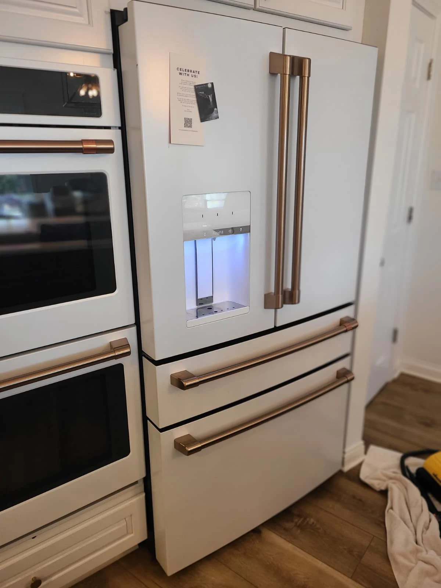
The Call: “The Freezer Is Making Noise”
A customer in Carmel, Indiana, called Alex Appliance Repair because the freezer was making noise. The appliance was a Café French-door refrigerator with a bottom freezer. A noise complaint describes what the homeowner hears; an inspection is needed to identify the component and the condition behind it.
Diagnosis during this visit established that the freezer evaporator fan assembly and temperature sensor needed replacement. The work also included clearing the drain line with steam. Our original service photographs document access to the freezer, frost and ice around the cooling area, the replacement components and the rear panel after reassembly.

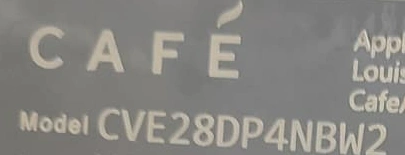
Model Identification and the Correct Sensor Name
The original label confirms Café CVE28DP4NBW2. This cropped photograph preserves the appliance brand and model so the repair can be associated with the correct refrigerator configuration. The serial number and connected-appliance information are outside the crop.
The temperature sensor is called a thermistor in the GE Appliances catalog. In this repair, it is the freezer temperature-sensing component mounted at the rear cover. The fan is listed as the freezer evaporator fan: a fan and motor assembly that moves air through the freezer cooling area. These are two replacement components, with the motor included in the fan assembly.

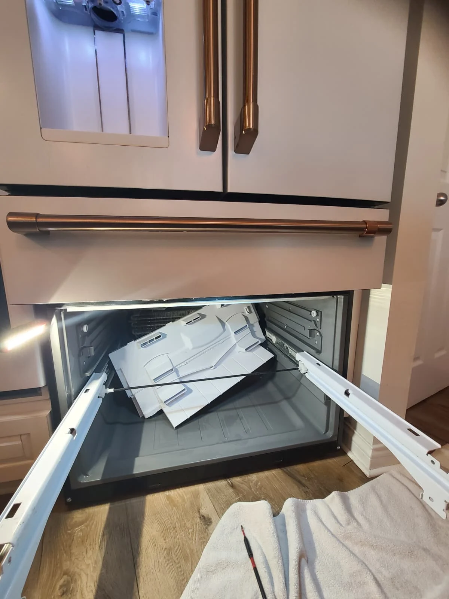
Opening the Freezer for Diagnosis
The freezer was disassembled to reach the components behind its rear interior wall. The drawer was removed, and the rear cover was released to expose the evaporator and provide access to the fan and sensor. The photograph shows this access stage before the rear panel was taken out of the compartment.
This access made it possible to inspect more than the visible storage space. The fan sits on the back of the cover, while the evaporator and drain area are behind it. Examining that whole area was relevant to this visit because the repair involved both component replacement and clearing the drain line.
Frost and Ice Behind the Rear Panel
The photographs below show frost on the evaporator and ice beside the fan housing. Those visible conditions are part of the repair record. Ice near a rotating fan can interfere with clearance and contribute to noise, although a photograph alone cannot establish every cause of a sound or determine whether a motor needs replacement.

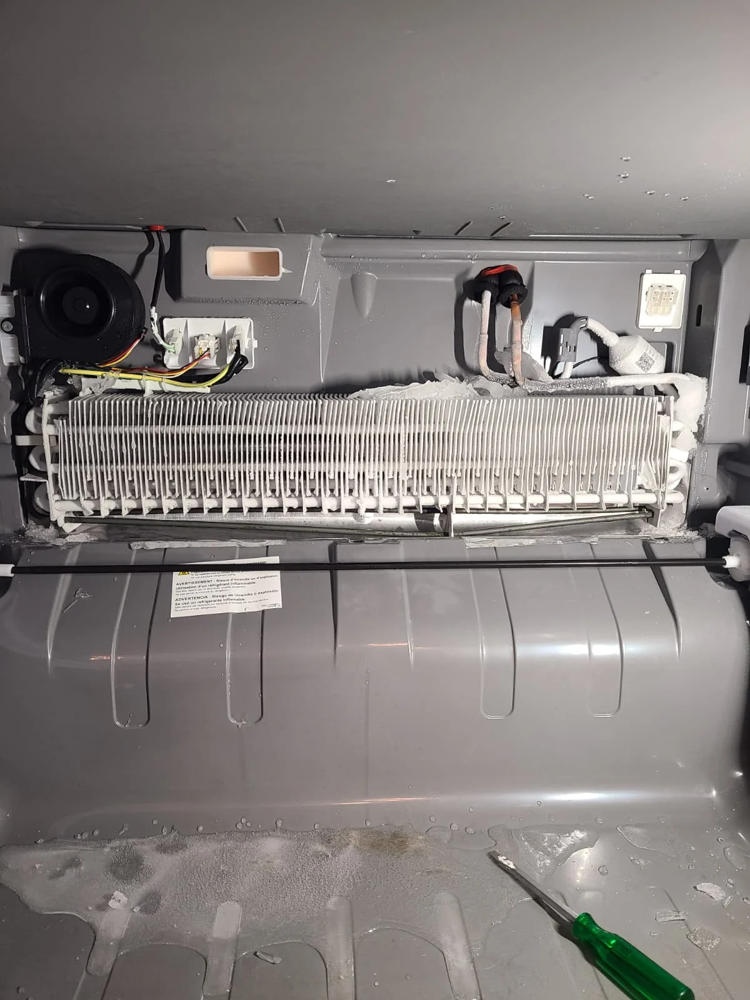

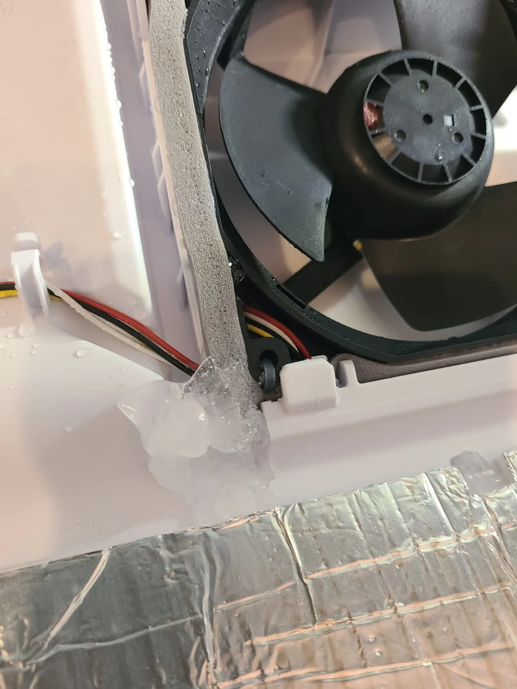
For this appliance, the technician's diagnosis called for replacing the fan assembly and thermistor. The drain line was also cleared with steam. The scope therefore addressed the diagnosed components as well as the drainage work, rather than relying on removal of visible ice as the entire repair.

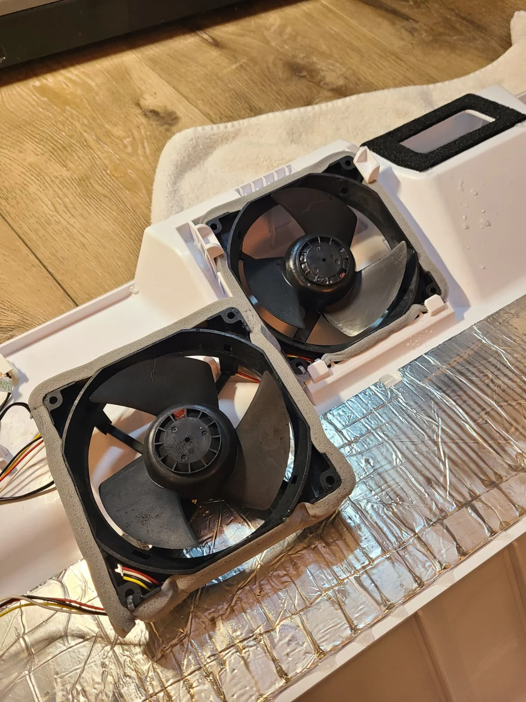
Replacing the Freezer Evaporator Fan
The removed fan and replacement assembly are shown together on the rear cover. The replacement includes the motor and fan, which is why this work is described as freezer evaporator fan assembly replacement. The assembly was installed in the panel before the freezer was put back together.
The supplied exploded diagram helps locate the parts in the freezer assembly: callout 67 identifies the fan and callout 66 identifies thermistors. These are diagram positions. The model-specific GE Appliances freezer section catalog provides the assembly reference.
Replacing the Freezer Thermistor
A thermistor senses temperature through changes in electrical resistance. It supplies temperature information to the refrigerator's control system. Here, the replacement sensor was fitted at the rear cover, and its wiring connections were completed and insulated before reassembly. The service photographs show the replacement sensor and the finished insulated connections.

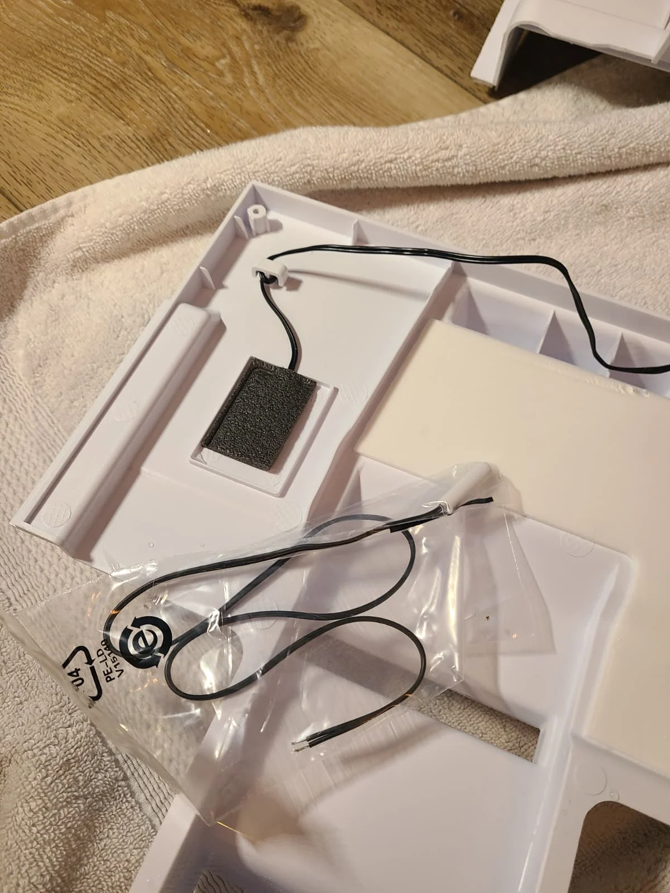

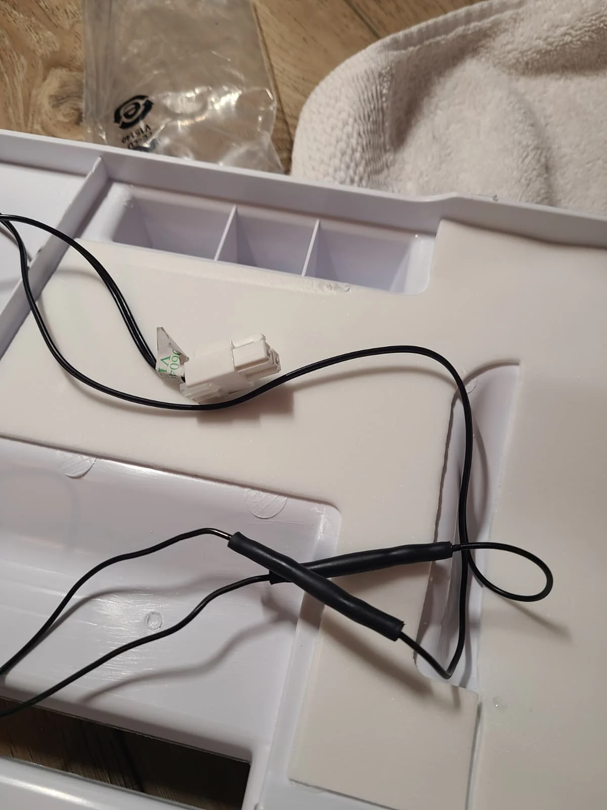
The diagram includes more than one thermistor position. The repair photos identify the work at the cover-mounted freezer sensor; they should not be read as evidence that every sensor shown in the diagram was replaced. The documented work was replacement of the diagnosed temperature sensor and freezer fan assembly.

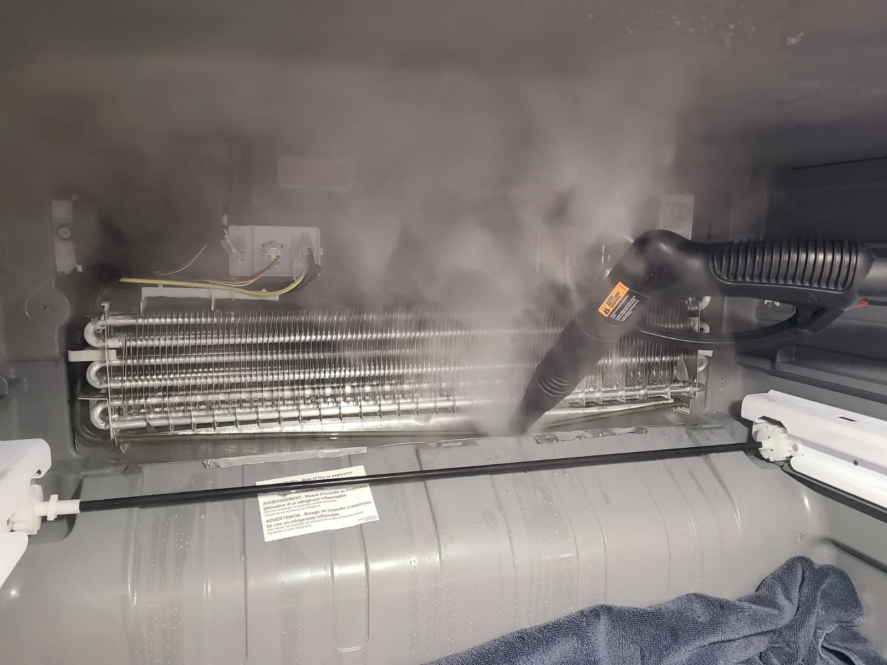
Clearing the Drain Line with Steam
With the rear panel removed, steam was used to clear the drain line and the drain area beneath the evaporator. The photograph captures this stage of the actual service visit. Drainage matters because water from defrosting needs a path out of the freezer cooling area.
The visible ice and the drain service belong in the same repair history, but the photographs do not establish that a single fault caused every condition. The article records the confirmed work: component replacement, steam clearing of the drain and reassembly. It does not substitute a general explanation for the diagnosis made on this refrigerator.

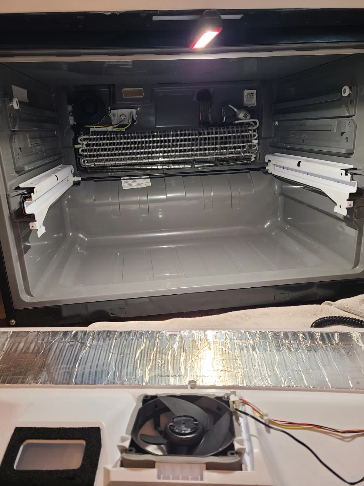
The Cooling Area After Drain Service
After the steam work, the exposed evaporator and drain area were photographed again. This view shows the cooling compartment with the rear cover still out and the fan mounted on the cover in the foreground. It documents the transition from the ice-covered area to the stage before the interior panel was reinstalled.
The fan, sensor, cover and drain are close together but serve different functions. The fan circulates air, the thermistor senses temperature, and the drain carries away defrost water. Describing each part separately helps explain why this particular noise complaint led to more than one service operation.

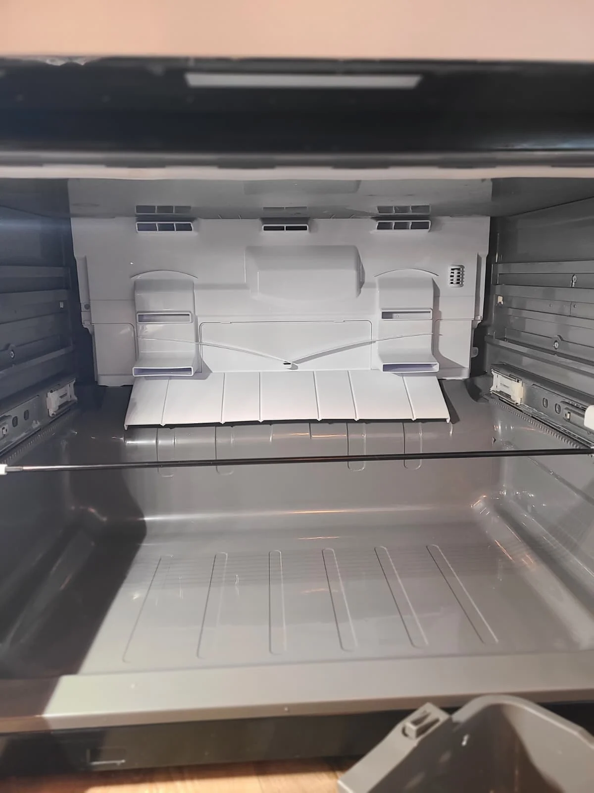
Rear Panel Reinstalled
The final interior photograph shows the rear freezer panel back in position after the fan and thermistor replacement and drain-line clearing. The freezer was reassembled following the work. These photos provide a record of the repair performed at the Carmel home, from access through reassembly.
When arranging service for a similar concern, describe where the sound seems to come from and whether it changes when the freezer door opens. Include the appliance model and mention any visible frost or ice. Those observations help explain the complaint; the appropriate repair still depends on inspecting the individual refrigerator.
Questions About a Noisy Café Freezer
Why is my Café freezer making noise?
Noise can come from a fan, ice interfering with a moving part or another source. On this CVE28DP4NBW2, diagnosis led to freezer evaporator fan and thermistor replacement, along with steam clearing of the drain line. Another refrigerator may need different work.
What is the temperature sensor called?
The catalog name is thermistor. It senses temperature for the control system. This repair involved the freezer sensor at the rear cover.
Were the motor and fan separate repairs?
The freezer evaporator fan was replaced as an assembly that includes its motor. The thermistor was a separate replacement component.
Will melting the ice fix the noise permanently?
Removing ice does not establish why it formed or whether a fan or sensor is faulty. This visit included diagnosis, component replacement and drain-line clearing.
Do you repair Café refrigerators in Carmel?
Alex Appliance Repair provides refrigerator repair service in Carmel, Indiana. Share your model, symptoms and service address when requesting a visit.
Café Refrigerator and Freezer Repair in Carmel
If your freezer is making an unusual noise, describe the symptom when contacting Alex Appliance Repair. We explain the diagnosis and estimate before approved repair work.
Explore our refrigerator repair in Carmel, Carmel service coverage and recent appliance repair stories. Alex Appliance Repair is an independent service operated by Aksenov LLC.
Call (463) 248-8429 or use online booking to request service.
Book refrigerator repair in Carmel